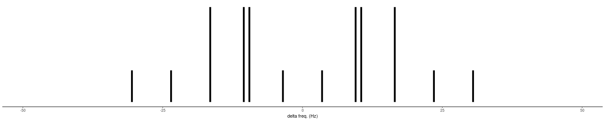
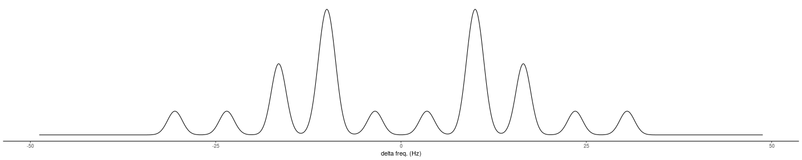

Why would I want it?
Input your list of nuclides in the table
simspec <- function(nuclides, lb = 1) {
spectrum <- data.frame(x = 0, y = 1)
for (i in 1:nrow(nuclides)) {
spectrum <-
couplen(spectrum,
I = nuclides$I[i],
J = nuclides$J[i],
n = nuclides$n[i])
}
lbspc <- lbroad(spectrum, lb = lb)
list(spectrum, lbspc)
}
nuclides <- data.frame(I = c(.5, 1), J = c(7, 20), n = c(3,1))
spectrum <- simspec(nuclides)
plotSpec(spectrum[[1]])

We get finite linewidth with a gaussian convolution (?) of the spectral lines. You can select the broadening with the slider.

/
#